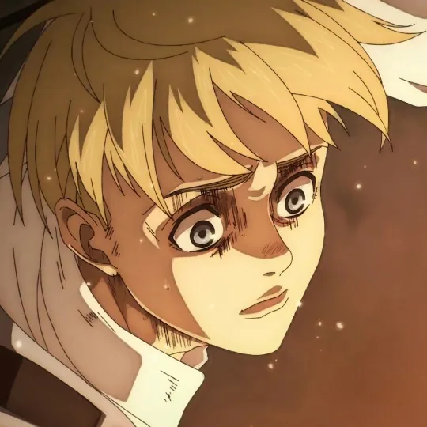
Персонажи
Знакомьтесь
с персонажами
Встречайте отважных солдат, вступивших в безнадёжную борьбу против таинственных титанов, стремящихся уничтожить человеческую расу.
Герои истории«Борись! Проиграешь — умрёшь, победишь — выживешь!
— Эрен Йегер
Если не бороться — не победить!»
Человечество давно живёт за тремя стенами, спасаясь от гигантских титанов. Но однажды стена не выдерживает, и для Эрена и его друзей начинается борьба за свободу. Без спойлеров: вот как разворачивается история.
Падение стены Мария и первые шаги в Разведкорпус.
Угроза оказывается ближе, чем казалось: бой за стену Роза.
Интриги внутри стен и поиск правды о мире.
Финал истории и цена свободы.

Встречайте отважных солдат, вступивших в безнадёжную борьбу против таинственных титанов, стремящихся уничтожить человеческую расу.
Герои истории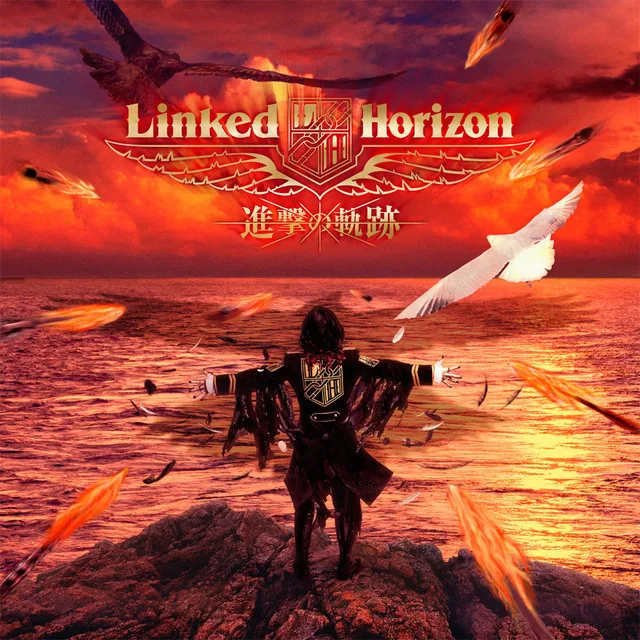
Ощутите мрачную атмосферу через захватывающие музыкальные композиции — от динамичных опенингов до проникновенных саундтреков.
Музыка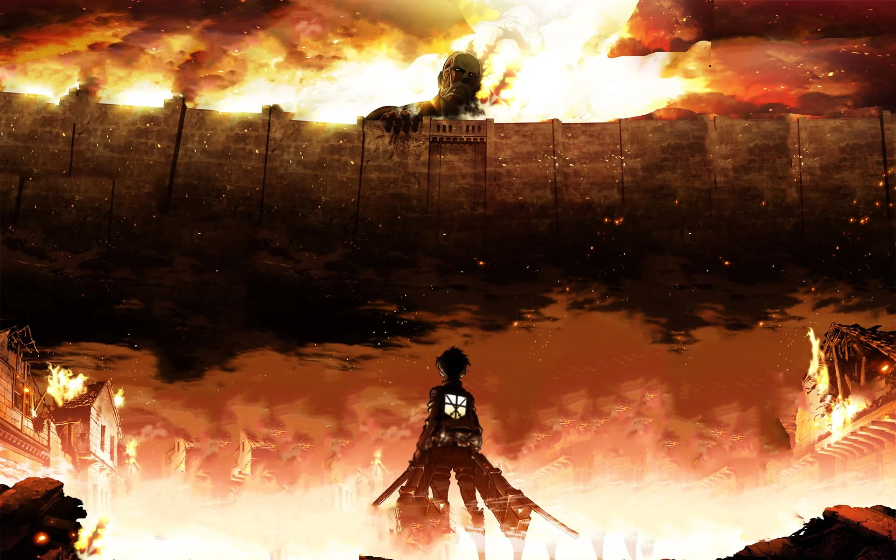
Завораживающие иллюстрации — от зловещих руин человеческих поселений до величественных стен, ограждающих людей от гигантских тварей.
Галерея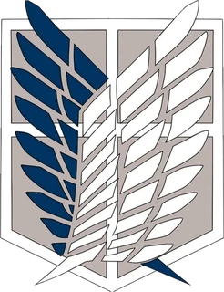
Единственный отряд, который выходит за стены. Его солдаты изучают мир титанов и платят за это самую высокую цену. Эмблема — «Крылья свободы».
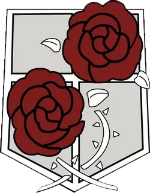
Охраняет стены и города, следит за воротами и артиллерией. Именно гарнизон первым встречает угрозу, когда стена перестаёт быть защитой.
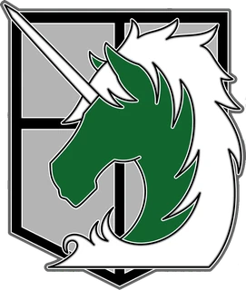
Элита, которая служит в глубине страны, в столице за стеной Сина, охраняет короля и порядок. Мечта многих курсантов — попасть сюда.
Внешняя и самая большая стена. Первой встречает всё, что приходит извне.
Средняя стена: за ней жизнь идёт спокойнее, а города богаче.
Внутренняя стена вокруг столицы Митрас, где живут король и знать.
Девять титанов-перевертышей наследуются людьми, а остальных титанов разделяют по типам.
АтакующийТитан, вечно рвущийся вперёд.
БронированныйТвёрдая броня по всему телу.
КолоссальныйГигантский рост и обжигающий пар.
Женская особьЛовкий боец, способный кристаллизоваться.
ПрародительВласть над остальными титанами.
МолотобоецОружие, созданное из кристалла.
ЗвероподобныйРазум и власть над низшими титанами.
Титан-перевозчикВыносливость, способная тащить груз.
Титан-челюстиСкорость, когти и мощные челюсти.Ведут себя непредсказуемо: не идут напролом и не следуют привычным повадкам.
Обычные титаны без разума. Они не едят ради еды, а охотятся только на людей.
О проекте
Учебный проект: адаптивный сайт по вселенной «Атаки титанов» с плеером серий, слайдером персонажей, музыкальным разделом и галереей иллюстраций.